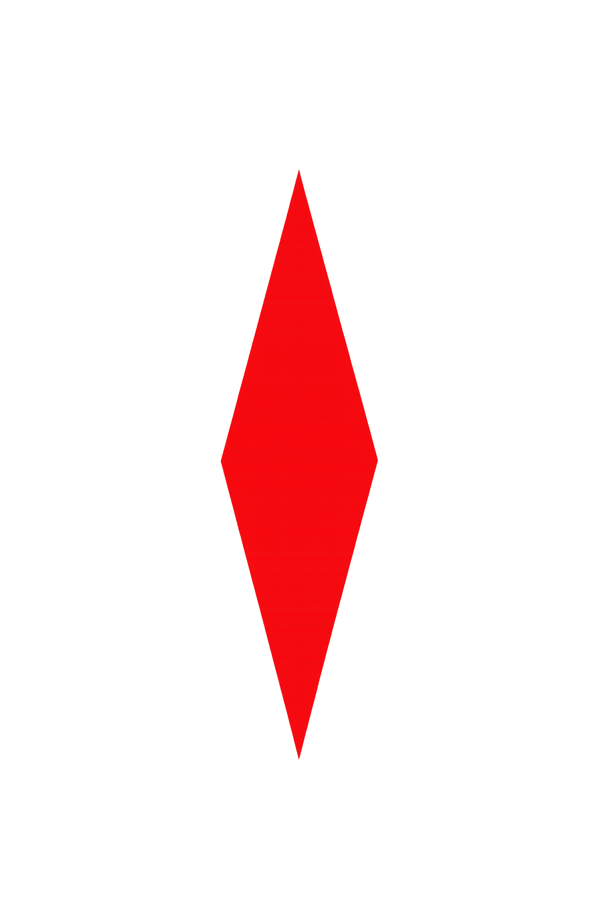
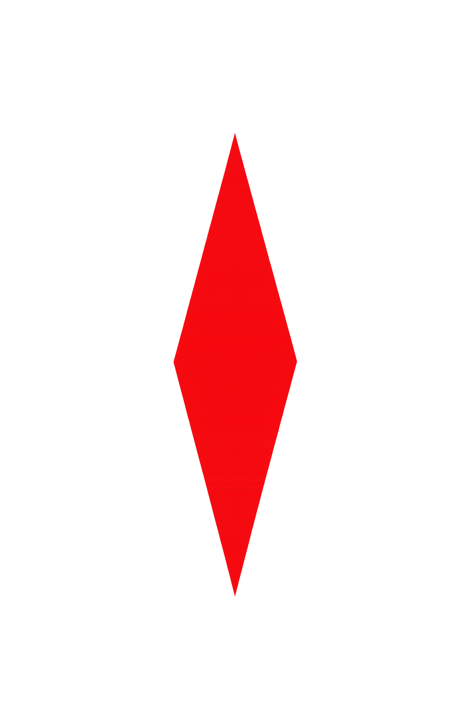
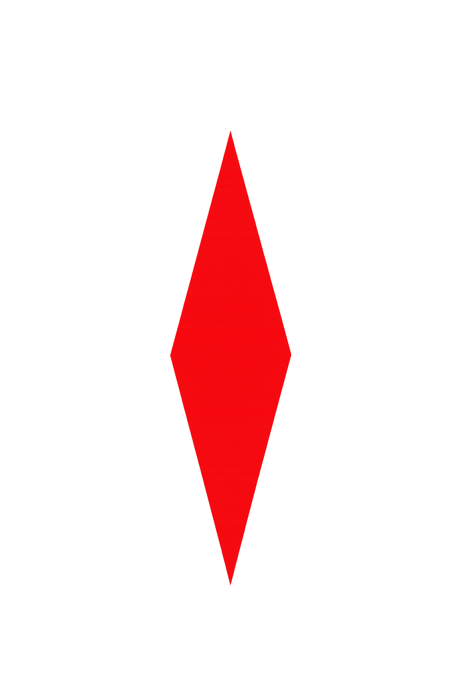

🧭 Qibla Direction
Enable location and compass to show the direction of the Kaaba.
 

Fajr: --:--
Dhuhr: --:--
Asr: --:--
Maghrib: --:--
Isha: --:--
Enable location and compass to show the direction of the Kaaba.

• Location is used only for prayer times and Qibla direction.
• No data is stored or shared.
• Astronomical calculations use publicly available formulas.
• This is a personal devotional tool, not affiliated with any official Islamic institution.